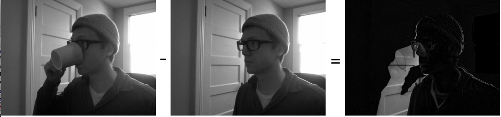

ofxCvGrayscaleImage

class methods
Extends
This class extends others, you can call their methods on an instance of ofxCvGrayscaleImage too:
This represents an OpenCV friendly image in grayscale, i.e. without any color data. This is useful because many of the image processing and analysis routines in OpenCV (or OF for that matter) don't require color information. Less information to sort through means faster image analysis and faster applications. You can convert an ofxCvColorImage to an ofxCvGrayscaleImage using the = operator like so:
grayscaleImg = colorImg;
A common routine that you'll see is something like the following:
colorImg.setFromPixels(vidGrabber.getPixels());
grayImage = colorImg; // convert our color image to a grayscale image
The ofxCvGrayscaleImage can then be passed to a ofxCvContourFinder instance for contour and blob detection.
contourFinder.findContours(grayscaleImage, 5, (340*240)/4, 4, false, true);
ofxCvGrayscaleImage(...)
ofxCvGrayscaleImage::ofxCvGrayscaleImage(const ofxCvGrayscaleImage &mom)
Copy constructor, allows you copy one ofxCvGrayscaleImage into another.
absDiff(...)
void ofxCvGrayscaleImage::absDiff(ofxCvGrayscaleImage &mom)
Makes a diff of the current image and the mom image. This alters the pixels of the ofxCvGrayscaleImage instance.
current.absDiff(incoming);
The below image shows how the diff process operates:

absDiff(...)
void ofxCvGrayscaleImage::absDiff(ofxCvGrayscaleImage &mom, ofxCvGrayscaleImage &dad)
Sets the pixels of the images ofxCvGrayscaleImage instance to a diff of the &mom and &dad instance.
adaptiveThreshold(...)
void ofxCvGrayscaleImage::adaptiveThreshold(int blockSize, int offset=0, bool invert=false, bool gauss=false)
Increases the contrast of the image by blocks, the larger the block, the larger the area that is thresholded at one time. Invert flips the values of the image, making black into white and vice versa. gauss determines whether the image is to be thresholded usinga Gaussian method or simply a plain thresholding. Below you can see the result of using adaptive threshold with two different values.
left.adaptiveThreshold(20);
right.adaptiveThreshold(50);
blurHeavily()
void ofxCvGrayscaleImage::blurHeavily()
Blurs the image using a pre-determine blur amount.
brightnessContrast(...)
void ofxCvGrayscaleImage::brightnessContrast(float brightness, float contrast)
Sets the brightness and contrast of an image.
contrastStretch()
void ofxCvGrayscaleImage::contrastStretch()
This increases the contrast of the image remapping the brightest points in the image to white and the darkest points in the image to black. Generally on a ofxCvGrayscaleImage it isn't particularly noticeable, though it can have a large effect mathematically.
convertToRange(...)
void ofxCvGrayscaleImage::convertToRange(float min, float max)
Maps the pixels of an image to the min and max range passed in.
colors.setFromPixels(grabber.getPixels());
first = colors; // will leave unaltered
second = colors; // change it
second.convertToRange(100, 140); // super low contrast
operator=(...)
void ofxCvGrayscaleImage::operator=(const ofPixels &_pixels)
Copies a IplImage into a ofxCvGrayscaleImage using the = symbol.
grayImage = iplImage; // make sure that the dimensions and ROI match
operator=(...)
void ofxCvGrayscaleImage::operator=(const ofxCvColorImage &mom)
Copies a ofxCvColorImage into a ofxCvGrayscaleImage using the = symbol.
grayImage = colorImage; // make sure that the dimensions and ROI match
operator=(...)
void ofxCvGrayscaleImage::operator=(const ofxCvFloatImage &mom)
Copies a ofxCvFloatImage into a ofxCvGrayscaleImage using the = symbol.
grayImage = floatColorImage; // make sure that the dimensions and ROI match
operator=(...)
void ofxCvGrayscaleImage::operator=(const ofxCvGrayscaleImage &mom)
Copies one ofxCvGrayscaleImage to another ofxCvGrayscaleImage using the = symbol.
imageOne = imageTwo; // make sure that the dimensions and ROI match
operator=(...)
void ofxCvGrayscaleImage::operator=(const ofxCvShortImage &mom)
Copies a ofxCvShortImage into a ofxCvGrayscaleImage using the = symbol.
grayImage = shortColorImage; // make sure that the dimensions and ROI match
scaleIntoMe(...)
void ofxCvGrayscaleImage::scaleIntoMe(ofxCvImage &mom, int interpolationMethod)
Scales the image passed in to be the size of the current image,
ofxCvImage first;
first.allocate(640, 480);
ofxCvImage second;
second.allocate(320, 240);
second.scaleIntoMe(first); // first is now 320,240
set(...)
void ofxCvGrayscaleImage::set(float value)
Set all the pixels in the image to the float value passed in. This is useful for blanking or filling an image quickly. the values are 1.0 to 255.0.
setFromColorImage(...)
void ofxCvGrayscaleImage::setFromColorImage(ofxCvColorImage &mom)
Sets the grayscale image from an ofxCvColorImage.
setFromFloatImage(...)
void ofxCvGrayscaleImage::setFromFloatImage(ofxCvFloatImage &mom)
Sets the grayscale image from an ofxCvFloatImage.
setFromPixels(...)
void ofxCvGrayscaleImage::setFromPixels(const unsigned char *_pixels, int w, int h)
Set all the pixels in a ofxCvGrayscaleImage from a pointer to an array of unsigned char values, using the w and h parameters to determine the dimensions of the image. The array is assumed to contain grayscale values.
setRoiFromPixels(...)
void ofxCvGrayscaleImage::setRoiFromPixels(const unsigned char *_pixels, int w, int h)
This allows you to set the ROI on the image from an ofPixels instance. Region of Interest is a rectangular area in an image, to segment object for further processing. Once the ROI is defined, OpenCV functions will operate on the ROI, reducing the number of pixels that the operation will examine.
threshold(...)
void ofxCvGrayscaleImage::threshold(int value, bool invert=false)
Increases the contrast of the image. The value is the threshold level applied to the image, for instance:
altered.threshold(30); // super high contrast
comments powered by Disqus
Tuesday, 05 January 2016 21:15:47 UTC
에 마지막으로 업데이트됨 -
5e2f0ec7441555c168a0a6fa65d3fd9c627539d4
hosting for openFrameworks.kr is provided by github.com
comments
You can add comments with usage examples or other information for each class, method or variable, for adding documentation to an empty section or reporting errors is better to send a fix or open an issue through github.
When posting code enclose it in: